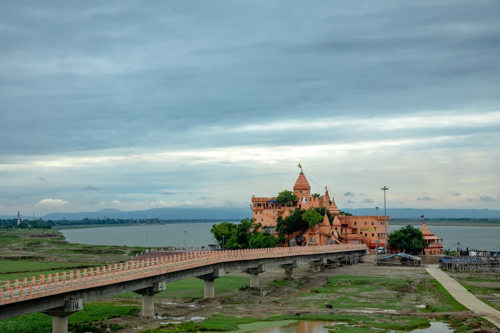
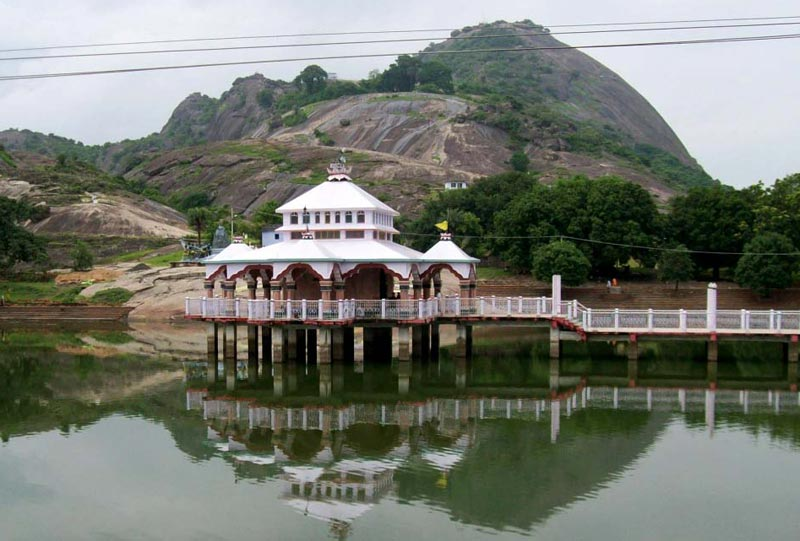
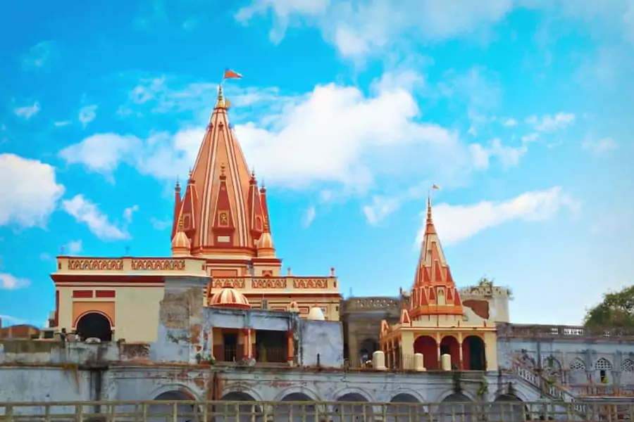

Bhagalpur Travel Guide
Discover the real Silk City — ancient temples, wildlife, history & spiritual sites
Explore Bhagalpur's Treasures
From ancient Buddhist universities to serene Ganga ghats and vibrant wildlife

Vikramshila University
Ancient Buddhist learning center founded by King Dharmapala in the 8th century. One of India's two most important Buddhist universities alongside Nalanda. Excavated ruins reveal stupas, temples and monasteries spread across a vast complex.

Ajgaibinath Temple
Ancient Shiva temple carved into a rock on the banks of the holy Ganges. Famous for the Shravani Mela when millions of Kanwariyas carry sacred Ganga water. The temple dates back to the Gupta period.

Mandar Hill
Sacred hill mentioned in Hindu mythology as the churning rod used in Samudra Manthan. Features ancient rock-cut sculptures, Jain temples, and breathtaking panoramic views of the Gangetic plains.

Budhanath Temple
Ancient Shiva temple complex on the banks of the Ganges. Known for its serene atmosphere and beautiful riverside location. A peaceful spot for evening prayers, meditation and watching the Ganga aarti.
Kuppa Ghat / Barari Ghat
A serene Ganga ghat perfect for evening walks, boat rides, and morning yoga. Popular among locals for peaceful riverside moments. Witness stunning sunrises and the daily rhythm of life along the holy river.
Vikramshila Dolphin Sanctuary
India's only Gangetic dolphin sanctuary spread across 50 km of the Ganges. Home to the endangered Gangetic river dolphin — India's National Aquatic Animal. Best spotted during winter mornings on guided boat safaris.
The Silk City Heritage
Bhagalpur is world-famous for its exquisite Tussar and Mulberry silk
Bhagalpuri Silk
Bhagalpur is known worldwide as the "Silk City" of India, producing some of the finest Tussar silk. The silk industry here employs thousands of families and dates back over 200 years. Visit the silk market to witness weavers at work and buy authentic handloom products.
Local Delicacies of Bhagalpur
Don't miss these authentic Bihari flavors when visiting Silk City
Litti Chokha
Baked wheat balls stuffed with sattu, served with roasted vegetables — the soul food of Bihar
Sattu Paratha
Stuffed flatbread with roasted gram flour — a healthy local breakfast staple
Khaja
Flaky layered sweet pastry — the famous dessert of Bihar, crispy and syrupy
Malpua
Sweet fried pancakes soaked in sugar syrup — a festive favorite across Bihar
Ready to explore Silk City?
Book your stay at one of our verified hotels and experience the magic of Bhagalpur.
Find Hotels Near These Places